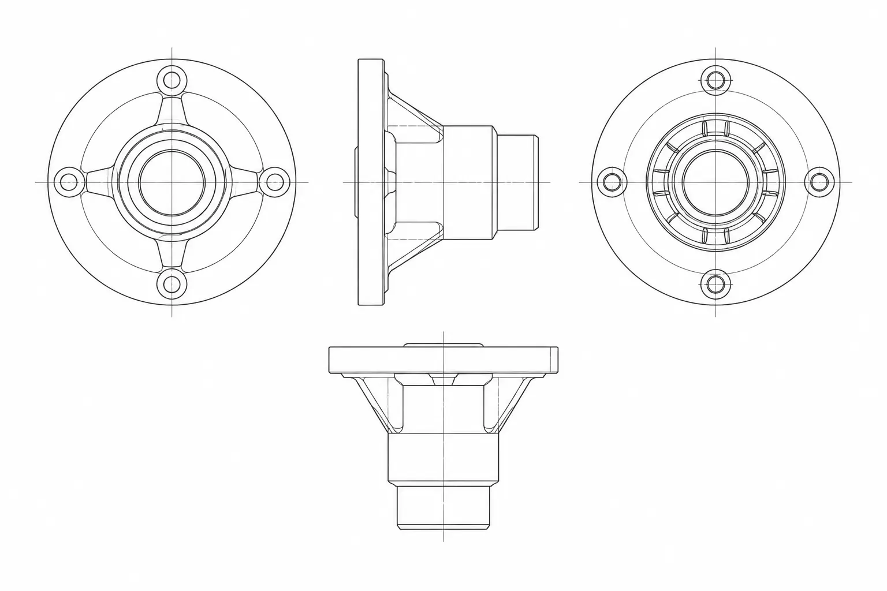

에세이 · 작업 방식
되돌릴 수 있는 만큼만
과감해질 수 있다
작업의 속도를 결정하는 것은 도구가 아니라 되돌릴 수 있는 범위다. 한 번에 되돌릴 수 있는 단위가 작을수록 더 과감하게 시도할 수 있고, 시도가 많아질수록 결과는 빨리 수렴한다.
그래서 좋은 작업 환경은 빠른 환경이 아니라 취소가 싼 환경이다. 저장과 게시를 분리하고, 게시에는 영수증을 남기고, 영수증이 있으면 언제든 이전 상태로 돌아갈 수 있게 한다.
이 원칙은 화면에도 그대로 적용된다. 한 화면에서 수행할 수 있는 결정의 수를 줄이면 각 결정의 되돌림 비용이 내려가고, 사용자는 화면을 읽는 대신 사용하게 된다.
취소가 싼 환경에서만 사람은 과감해진다.
게시는 저장의 연장이 아니라 별개의 사건이다. 저장은 사용자의 손에서 끝나지만, 게시는 다른 사람이 볼 수 있는 상태를 만든다.
두 사건을 분리하면 편집 중의 불완전한 상태가 바깥으로 새지 않고, 게시 시점마다 검증할 수 있는 지점이 생긴다.